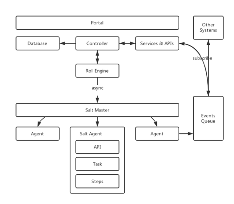
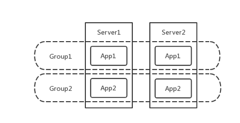
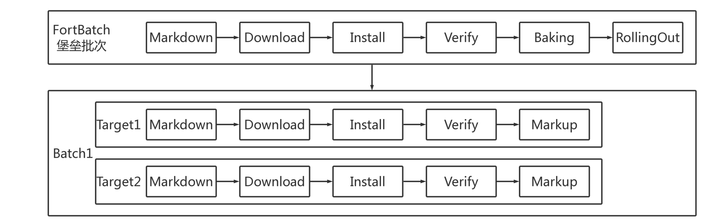

- 00 开篇词 量身定制你的持续交付体系.md.html
- 01 持续交付到底有什么价值？.md.html
- 02 影响持续交付的因素有哪些？.md.html
- 03 持续交付和DevOps是一对好基友.md.html
- 04 一切的源头，代码分支策略的选择.md.html
- 05 手把手教你依赖管理.md.html
- 06 代码回滚，你真的理解吗？.md.html
- 07 “两个披萨”团队的代码管理实际案例.md.html
- 08 测试环境要多少？从现实需求说起.md.html
- 09 测试环境要多少？从成本与效率说起.md.html
- 10 让环境自己说话，论环境自描述的重要性.md.html
- 11 “配置”是把双刃剑，带你了解各种配置方法.md.html
- 12 极限挑战，如何做到分钟级搭建环境？.md.html
- 13 容器技术真的是环境管理的救星吗？.md.html
- 14 如何做到构建的提速，再提速！.md.html
- 15 构建检测，无规矩不成方圆.md.html
- 16 构建资源的弹性伸缩.md.html
- 17 容器镜像构建的那些事儿.md.html
- 18 如何做好容器镜像的个性化及合规检查？.md.html
- 19 发布是持续交付的最后一公里.md.html
- 20 Immutable！任何变更都需要发布.md.html
- 21 发布系统一定要注意用户体验.md.html
- 22 发布系统的核心架构和功能设计.md.html
- 23 业务及系统架构对发布的影响.md.html
- 24 如何利用监控保障发布质量？.md.html
- 25 代码静态检查实践.md.html
- 26 越来越重要的破坏性测试.md.html
- 27 利用Mock与回放技术助力自动化回归.md.html
- 28 持续交付为什么要平台化设计？.md.html
- 29 计算资源也是交付的内容.md.html
- 30 持续交付中有哪些宝贵数据？.md.html
- 31 了解移动App的持续交付生命周期.md.html
- 32 细谈移动APP的交付流水线（pipeline）.md.html
- 33 进阶，如何进一步提升移动APP的交付效率？.md.html
- 34 快速构建持续交付系统（一）：需求分析.md.html
- 35 快速构建持续交付系统（二）：GitLab 解决代码管理问题.md.html
- 36 快速构建持续交付系统（三）：Jenkins 解决集成打包问题.md.html
- 37 快速构建持续交付系统（四）：Ansible 解决自动部署问题.md.html
- 持续交付专栏特别放送 答疑解惑.md.html
- 持续交付专栏特别放送 高效学习指南.md.html
- 结束语 越痛苦的事，越要经常做.md.html
- 捐赠
22 发布系统的核心架构和功能设计
你好，我是王潇俊。我今天分享的主题是：发布系统的核心架构和功能设计。
我在分享《发布系统一定要注意用户体验》这个主题时，介绍了从用户体验的角度出发，设计一套发布系统的设计理念，以及具体实现。但是，用户体验设计得再好，后端系统无法支持，也就如同巧妇难为无米之炊。
截止到目前，携程一共有7000多个应用，平均每周生产发布8000多次，而测试环境的发布平均每周要40000多次，如果发布系统没有一个清晰的架构设计，完成这样艰巨的任务是难以想象的。
所以，今天我就从核心架构和功能设计的角度，和你聊聊如何设计一套发布系统。
发布系统架构
作为整个持续交付体系中极为重要的一个环节，应用的发布是提升交付效率的关键。高效的发布系统架构应该是清晰的、健壮的、低耦合的，从而达到在最糟糕的情况下也能运作的目的。
携程在发布系统这件事上也不是一蹴而就，在经历了各种尝试和努力后，最终设计出了一套分布式、高可用、易扩展的发布系统，其系统架构如图1所示。

图1 携程发布系统的系统架构
Roll Engine，即发布引擎，主要负责创建发布批次，按批次粒度实施部署策略，通过异步方式调用Salt Master服务，再分发到各个Agent节点上执行部署任务。真正的单机部署脚本会根据不同的应用或机型进行分发和定制。而 Controller ，则作为接收外部指令和读写数据的控制器。当然，对于一些对外的通知事务，发布系统会采用消息机制向外广播。
发布系统需要将发布相关的元数据信息（主要包括App应用、Group集群、Server服务器等），从外部CMDB资产数据库落地到本地数据库，作为一层本地缓存。
数据更新的方式，主要有两种，一种是在每次发布前更新，另一种是通过消费通知消息进行更新，以保证发布元数据的准确性。
根据携程发布系统结构设计的经验，我总结了几个需要注意的点：
每台服务实例上的发布脚本一旦产生则不再修改，以达到不可变模型的要求；
发布引擎和Salt Master之间采用异步通信，但为增强系统健壮性，要有同步轮询的备案；
面对频繁的信息获取，要善用缓存，但同时也一定要慎用缓存，注意发布信息的新鲜度。
发布系统核心模型
发布系统的核心模型主要包括Group、DeploymentConfig、Deployment、DeploymentBatch，和DeploymentTarget这5项。
Group，即集群，一组相同应用的实例集合，是发布的最小单元，其概念如图2所示。

图2 Group概念示意图
同时，Group的属性非常重要，包括Site站点、Path虚拟路径、docBase物理路径、Port应用端口、HealthCheckUrl健康检测地址等，这些属性都与部署逻辑息息相关。携程之所以这样设计，是因为group这个对象直接表示一个应用的一组实例，这样既可以支持单机单应用的部署架构，也可以支持单机多应用的情况。
DeploymentConfig，即发布配置，提供给用户的可修改配置项要通俗易懂，包括：单个批次可拉出上限比、批次间等待时间、应用启动超时时间、是否忽略点火。
Deployment，即一个发布实体，主要包括Group集群、DeploymentConfig发布配置、Package发布包、发布时间、批次、状态等等信息。
DeploymentBatch，即发布批次，通常发布系统选取一台服务器作为堡垒批次，集群里的其他服务器会按照用户设置的单个批次可拉出上限比划分成多个批次，必须先完成堡垒批次的发布和验证，才能继续其他批次的发布。
DeploymentTarget，即发布目标服务器或实例，它与该应用的Server列表中的对象为一对一的关系，包括主机名、IP地址、发布状态信息。
这里一定要注意，发布系统的对象模型和你所采用的部署架构有很大关系。 比如，携程发布系统的设计中并没有pool这个对象，而很多其他企业却采用pool实现对实例的管理。又比如，在针对Kubernetes时，我们也需要根据它的特性，针对性地处理Set对象等等。
发布流程及状态流转
发布系统的主流程大致是：
同一发布批次中，目标服务器并行发布；不同发布批次间则串行处理。每台目标服务器在发布流程中的五个阶段包括 Markdown、Download、Install、Verify、Markup。
如图3描绘了具体的发布流程。

图3 携程发布系统的流程
发布过程从技术实现上来说，就是通过状态机控制状态流转，而每个状态都对应一些具体的操作。
那么，我们就一起来看看整个状态流转如何通过状态机进行控制：
首先，借助于Celery分布式任务队列的Chain函数，发布系统将上述的Markdown、Download、Install、Verify、Markup五个阶段定义为一个完整的链式任务工作流，保证一个Chain函数里的子任务会依次执行。
其次，每个子任务执行成功或失败，都会将DeploymentTarget设置为对应的发布状态。 例如，堡垒批次中的DeploymentTarget执行到Verify点火这个任务时，如果点火验证成功，那么DeploymentTarget会被置为VERIFY_SUCCESS（点火成功）的状态，否则置为VERIFY_FAILURE（点火失败）的状态。
发布过程中，如果有任意一台DeploymentTarget发布失败，都会被认为是发布局部失败，允许用户重试发布。因此，重试发布只针对于有失败的服务器批次进行重试，对于该批次中已经发布成功的服务器，发布系统会对比当前运行版本与发布目标版本是否一致，如果一致且点火验证通过的话，则直接跳过。
这里需要注意的是， 堡垒批次不同于其他批次：堡垒批次中DeploymentTarget的Chain的最后一个子任务是Verify点火，而不是Markup。
再次，点火验证成功，DeploymentTarget的状态流转到VERIFY_SUCCESS后，需要用户在发布系统页面上触发Baking操作，即堡垒批次中DeploymentTarget的Markup，此时执行的是一个独立的任务事务，会将堡垒批次中的服务器拉入集群，接入生产流量。也就是说，这部分是由用户触发而非自动拉入。BAKE_SUCCESS堡垒拉入成功之后，就是其他批次的RollingOut事务了，这也是一个独立的任务，需要由用户触发其他批次开始发布的操作。
最后，设置发布批次。
除堡垒批次外，其他的机器会按照用户自主设置的最大拉出比来分批，每个批次间允许用户设置等待时间，或者由用户手动执行启动下个批次发布的操作。从第3个批次起，允许用户设置较短的或者不设置等待批次的间隔时间，以提高最后几个批次的速度，即尾单加速，这样可以提高整个发布过程的效率。
携程的发布系统，利用了一个分布式异步任务框架来处理整个发布过程的事务，然后通过状态机来控制这些任务的开始和停止。当然，由于我们使用Python语言，所以选择了Celery框架，其他语言也有很多成熟的类似框架，也建议你在实施过程中，充分利用这些框架的优势。
刹车机制
为了保证用户体验的顺畅和发布系统的高容错性，除堡垒批次外的每个发布批次均采用了Quick and Dirty的发布方式，即不管成功或失败，优先尝试把版本发布完，继续执行下个发布批次，后续再解决个别目标服务器发布失败的问题。
试想在这种发布方式下，我们应该如何避免大面积的发布失败影响业务呢？
于是，我们需要为发布系统提供刹车机制，即在每个批次开始发布任务前，系统会根据用户设置的单个批次可拉出上限比，进行失败率的计算与控制。发布时，一旦达到这个失败率，立即中断当前发布，从而保护Quick and Dirty发布方式。
一旦刹车后，发布系统允许用户先执行重试发布操作，如果因为重试批次中的服务器失联或者其他外因导致重试无果，则用户需要终止当前发布，重新设置单个批次可拉出上限比，或者临时将服务器从各个负载均衡设备或访问入口中拉出（与发布拉出为独立的标志位），由此发布系统的分组策略会剔除被拉出的服务器，不再做发布。与此同时，用户可以同步进行失败服务器的下线或者更换操作，而不会阻塞发布。
提升发布速度
从上面的发布过程中，你不难发现影响发布速度的步骤通常是下载和点火。
为了提高下载速度，携程在各个机房搭建了发布包专用的存储系统，实现了类似CDN的功能，编译和打包系统在任何一个写入点写入发布包，都会尽快同步到各个IDC及各个独立存储中，这样真正发布时，服务器只需从本IDC或本网段做下载。
对于点火，携程在框架层面统一提供了点火入口和常规的点火验证方法，收口了所有应用的点火验证规范和标准，容错性和速度都得到大幅提升。
而回滚方面，不再设置堡垒批次，发布系统默认提供了单个批次可拉出上限比为50%的配置，即分两个批次执行回滚发布。这样可以追求最快的回滚速度。当然在日常发布过程中，比如扩容发布，也可以不设置堡垒批次，但前提是待发布的版本已经被证明可以正确工作。
在单机部署逻辑上，发布系统在服务器本地保留了多个版本，在回滚发布时，可快速进行目录切换，进而直接省略了下载发布包的过程，最大限度地缩短应用的故障时间，提升回滚速度。
降级机制
对外部系统的服务依赖，例如LB负载均衡服务的拉出或拉入调用，发布系统需要具备降级机制，熔断外部系统依赖的能力，一旦发现外部服务不可用，可以及时处理，保证用户的紧急发布需求。
对外部系统的元数据依赖，例如从CMDB同步Group信息的场景下，发布系统可以使用Redis锁合并重复的请求，提高同步数据的吞吐能力，以解决重试并发的问题。另外，由于发布系统做了数据缓存，也就同时具备了一键降级CMDB等其他外部系统依赖的能力。
降级机制能够保证在突发异常情况下，发布系统可以解除所有外部依赖，独立完成任何发布应用的任务。也就是说，降级机制可以保证发布系统做到，只有部署包存在，就能恢复服务。
总结
我今天分享的主题就是，从后端系统设计的角度，来看看一套发布系统的核心架构和功能应该如何设计。我以携程目前使用的发布系统为例，从发布系统的架构、核心模型、发布流程及状态流转三个方面，展开了今天的分享。
首先，高效的发布系统架构应该是清晰的、健壮的、低耦合的，携程在经历各种迭代后，采用了以 Protal、Controller、Roll Engine、Salt Scripts 为核心的分层架构。
其次，在设计核心模型时，考虑到部署架构的个性化设计，即要兼容单机单应用，又要兼容单机多应用的问题，携程的发布系统采用了以 Group 和 Deployment 为核心的主要对象模型设计方案。这里你需要注意的是，发布系统的对象模型和你所采用的部署架构有很大关系，所以还是要量体裁衣。
再次，关于发布系统的发布流程，可以通过状态流转控制单机发布的5个步骤和发布批次。这部分你需要注意的是，堡垒批次不同于其他批次：堡垒批次中DeploymentTarget的Chain的最后一个子任务是Verify点火，而不是Markup。
最后，一款出色的发布系统，除了要考虑架构、核心模型，以及发布流程的问题外，还必须同时考虑一些附加问题，比如：
- 为了降低Quick and Dirty方式对业务功能的影响，你需要提供发布刹车机制；
- 利用分布式存储、尾单加速、symlink回滚等方式，可以提升发布速度；
- 必要的降级机制，可以保证发布系统的高可用。
思考题
如果你对携程的Tars感兴趣，可以通过https://github.com/ctripcorp/tars获取。你也可以参考开源版本Tars，迅速搭建一套发布系统，并结合自身的情况看看还需要增加什么设计？
欢迎你给我留言。
© 2019 - 2023 Liangliang Lee. Powered by gin and hexo-theme-book.